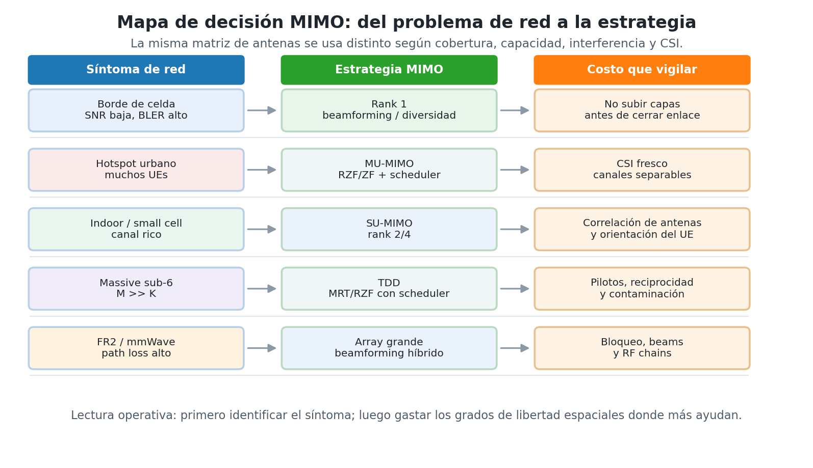
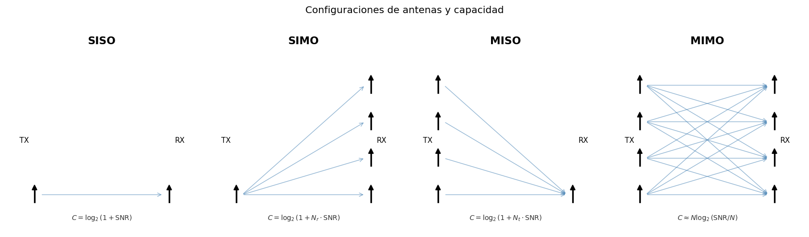
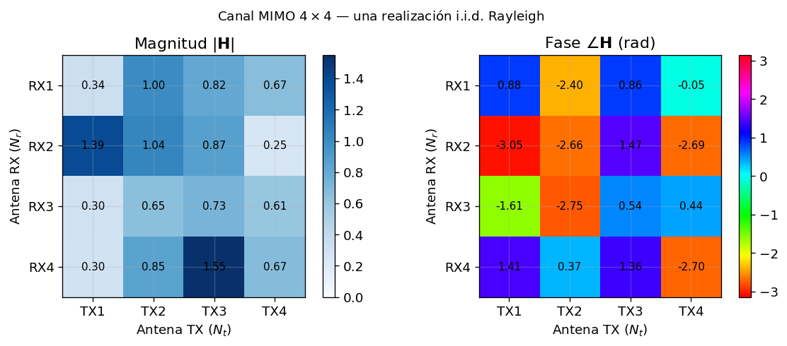
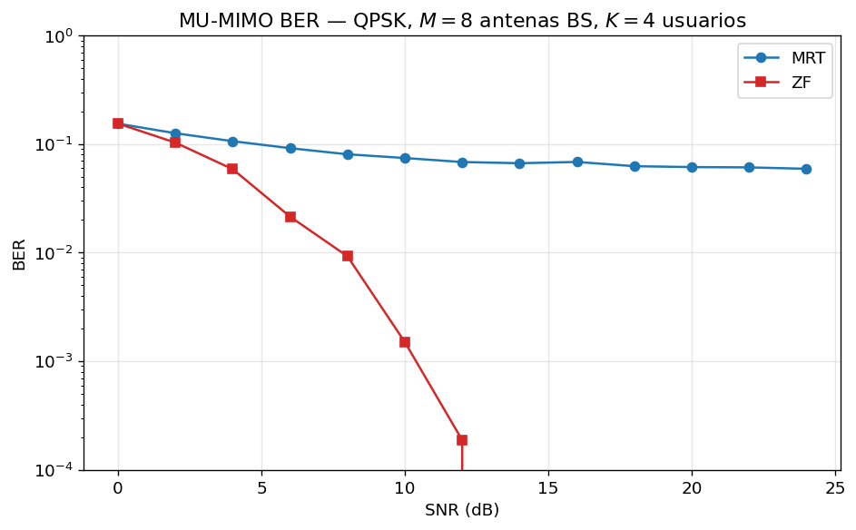
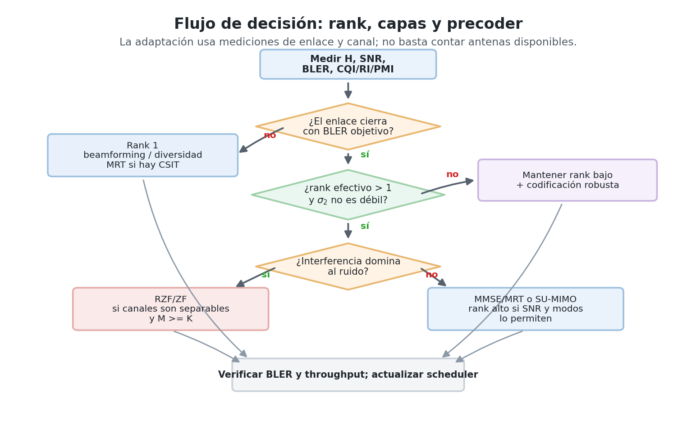
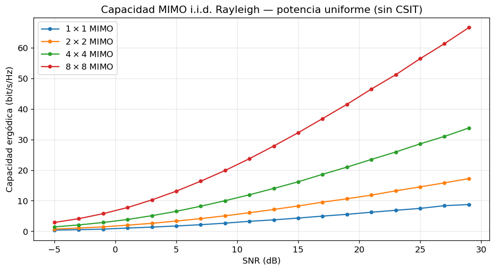
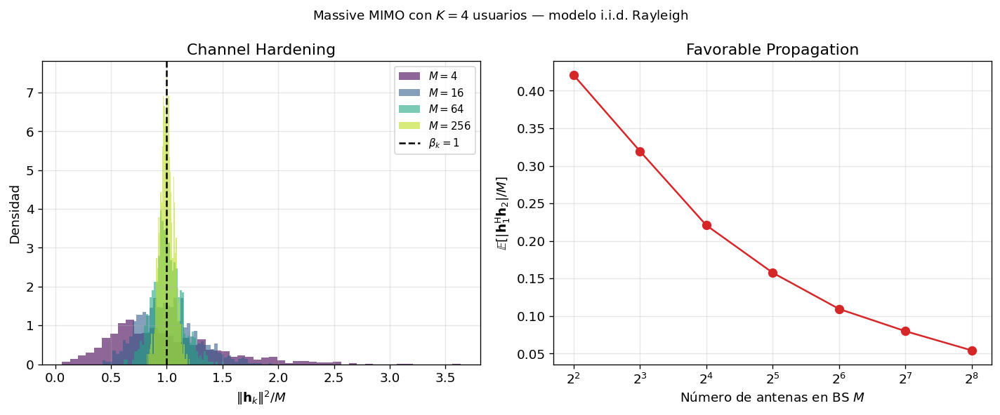
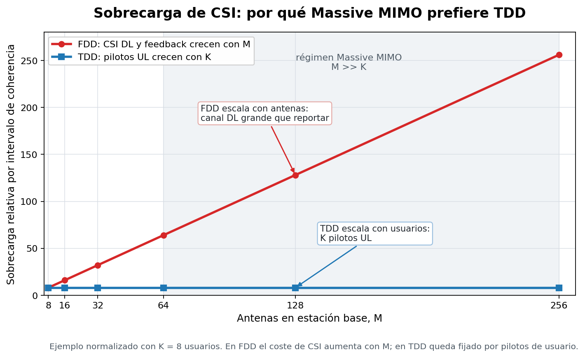
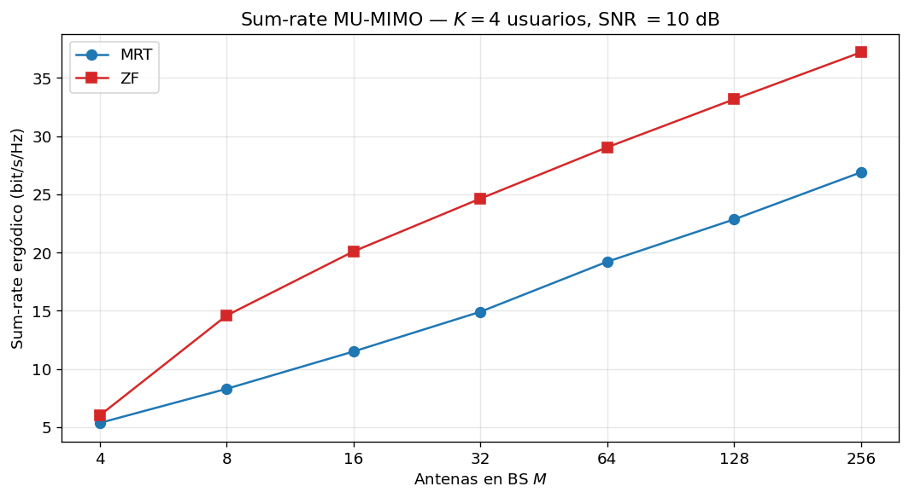

Sesión 06 — MIMO en redes reales: cobertura, capacidad y usuarios
Objetivos de Aprendizaje
Al finalizar esta sesión, el estudiante será capaz de:
- Diagnosticar qué problema de red intenta resolver un sistema multiantena: cobertura, throughput, interferencia, densidad de usuarios o pérdida de propagación en bandas altas.
- Elegir entre SIMO, MISO, SU-MIMO, MU-MIMO, Massive MIMO y beamforming híbrido según el escenario de despliegue.
- Interpretar la matriz de canal \(\mathbf{H}\) como herramienta de diseño: rank, valores singulares, condicionamiento, correlación espacial, normas de canal y CSI.
- Decidir cuándo conviene diversidad, beamforming o multiplexación espacial, y cuándo subir o bajar el rank de transmisión.
- Comparar detectores y precodificadores implementables (ZF, MMSE, SIC, ML, MRT, ZF y RZF/MMSE) en términos de interferencia, ruido, cómputo y disponibilidad de CSI.
- Explicar por qué Massive MIMO depende de TDD, pilotos, reciprocidad, scheduler y control de contaminación de pilotos.
Introducción
En las sesiones anteriores el problema parecía tener una sola dimensión: una señal entra, una señal sale, y el diseñador ajusta modulación, codificación, OFDM o potencia para que los bits sobrevivan. MIMO cambia la pregunta. La pregunta ya no es solo "cuánta capacidad tiene una matriz", sino:
Tengo un problema de cobertura, capacidad, interferencia o densidad de usuarios. ¿Qué hago con las antenas?
Esa es la lectura implementativa de MIMO. Las antenas no son decoración ni una fórmula de capacidad: son grados de libertad espaciales que se pueden gastar de formas distintas. A veces se usan para que un usuario en borde de celda reciba suficiente energía. A veces para enviar dos o cuatro capas al mismo terminal. A veces para servir varios usuarios al mismo tiempo. A veces para formar un haz estrecho en mmWave, donde sin ganancia de array el enlace ni siquiera cierra.
La decisión correcta depende del canal, no de una regla fija. Si el canal tiene buen rank y SNR alta, subir capas aumenta throughput. Si el canal está mal condicionado, forzar muchas capas hace que el receptor o el precoder amplifique ruido. Si los usuarios tienen canales casi ortogonales, MU-MIMO funciona bien. Si los canales son paralelos, el scheduler debe separarlos en tiempo/frecuencia o el precoder pagará mucha potencia para cancelar interferencia.
El objetivo de esta sesión es construir esa brújula. La matemática sigue estando: \(\mathbf{H}\), la SVD, el compromiso diversidad-multiplexación (DMT), y los precodificadores y detectores clásicos (MRT, ZF, MMSE). Pero aquí aparecen como herramientas para tomar decisiones de red; cada sigla se define en la sección donde se usa por primera vez.
Antes de empezar: qué repasar
Esta sesión usa álgebra lineal que no se enseña aquí:
- multiplicación matriz-vector;
- eigenvalores y eigenvectores — la ecuación \(\mathbf{A}\mathbf{v} = \lambda\mathbf{v}\): las direcciones que una matriz no rota, solo escala. En los textos en español el tema aparece como valores y vectores propios (o autovalores/autovectores) — buscar con esos nombres;
- la conjugada transpuesta \(\mathbf{A}^{\mathsf{H}}\) (transponer y conjugar cada entrada compleja);
- la norma \(\|\mathbf{v}\|\) de un vector y su cuadrado \(\|\mathbf{v}\|^2\) como energía.
Si "eigenvector" no le dice nada, repáselo antes de llegar a §3 con alguna de estas referencias:
- 3Blue1Brown, Essence of Linear Algebra, capítulos 13–14 (intuición visual de valores y vectores propios; subtítulos en español) — la mejor inversión de 30 minutos para esta sesión;
- Khan Academy (en español), unidad Valores y vectores propios: ahí se practica exactamente el procedimiento \((\mathbf{A} - \lambda\mathbf{I})\mathbf{v} = \mathbf{0}\) que usa la receta de §3.1;
- cualquier texto de álgebra lineal, capítulo de valores propios (Grossman, Lay o Strang).
La caja "Cálculo de la SVD de un canal 2×2" en §3.1 muestra el procedimiento completo paso a paso, incluida la relación \(\sigma = \sqrt{\lambda}\) — pero enseña a aplicar el concepto, no lo sustituye.
Teoría
Vocabulario de la sesión
- Capa = stream = flujo: son la misma cosa y este documento los usa como sinónimos. Es una secuencia de datos independiente que se transmite al mismo tiempo que las demás. Los estándares dicen layers; la literatura dice streams.
- Modo espacial = subcanal: cada canal paralelo e independiente contenido dentro de \(\mathbf{H}\); la SVD los revela. No es sinónimo de capa: la capa es lo que se transmite, el subcanal es por dónde pasa. Idealmente cada capa viaja por su propio subcanal.
- Grados de libertad espaciales: cuántas señales independientes puede manejar simultáneamente el arreglo de antenas. Se gastan en robustez, en throughput o en servir más usuarios — no alcanzan para todo a la vez.
- Cerrar el enlace: lograr que la potencia que llega al receptor alcance el SNR mínimo que exige la tasa de error objetivo. Si el enlace "no cierra", ninguna otra optimización importa.
- CSI / CSIT / CSIR: channel state information — el conocimiento de \(\mathbf{H}\). La T o R final indica quién lo tiene: el Transmisor o el Receptor.
- BS / UE: estación base / terminal del usuario.
- TDD / FDD: duplexación por tiempo (subida y bajada alternan sobre la misma frecuencia → el canal de ida y el de vuelta son el mismo: reciprocidad) / por frecuencia (subida y bajada en bandas distintas → canales distintos, la reciprocidad no aplica).
- FR1 / FR2: los dos rangos de frecuencia de 5G. FR1: sub-6 GHz. FR2: ondas milimétricas (24 GHz en adelante), donde la pérdida de propagación es tan alta que sin ganancia de haz el enlace no cierra.
- Los términos propios de Massive MIMO (channel hardening, favorable propagation, contaminación de pilotos) se definen en §7.
1. Primero el problema de red
Antes de hablar de SVD conviene mirar el síntoma del sistema. El mismo array de antenas puede resolver problemas diferentes según cómo se use.
Esta tabla es un mapa de la sesión completa: nombra estrategias y precodificadores que se definen en §5 y §7. Conviene leerla primero como panorama, sin necesidad de entender cada sigla todavía, y volver a ella al final de la sesión.
| Escenario | Síntoma de red | Estrategia MIMO natural | Costo o riesgo principal |
|---|---|---|---|
| Borde de celda rural | SNR baja, enlace frágil | Beamforming o diversidad (→ §4) | Subir rank demasiado rompe la robustez |
| Hotspot urbano | Muchos usuarios, interferencia alta | MU-MIMO con ZF/RZF (→ §5.2) y scheduler | CSI fresco y canales separables |
| Indoor / small cell | Canal rico, distancias cortas | SU-MIMO rank 2/4 | Antenas muy juntas reducen rank efectivo |
| Massive MIMO sub-6 GHz | Muchos UEs por celda | \(M \gg K\), TDD, RZF/MRT (→ §7) | Pilotos, reciprocidad y contaminación (→ §7.1) |
| FR2 / mmWave | Path loss alto, haces estrechos | Arrays grandes y beamforming híbrido (→ §7.2) | Bloqueo, alineamiento de beams y RF chains (→ §7.2) |

Una regla práctica aparece desde el primer minuto:
Regla de diseño
Primero se cierra el enlace; después se sube el rank. Si el UE apenas recibe señal, la prioridad es beamforming/diversidad. Si el enlace ya es robusto y el canal tiene modos espaciales independientes, entonces se explota multiplexación.
MIMO ofrece tres usos básicos:
- Diversidad: repetir o codificar la misma información sobre caminos independientes para reducir probabilidad de error.
- Beamforming: sumar señales con fases controladas para concentrar energía hacia un usuario o dirección.
- Multiplexación espacial: enviar capas distintas al mismo tiempo y en la misma banda para aumentar throughput.
La dificultad real es que esas tres metas compiten por los mismos grados de libertad espaciales. Un array no puede gastar todos sus recursos en robustez, máxima tasa y cancelación perfecta de interferencia a la vez.
Comprueba tu comprensión
P1. Un UE en borde de celda reporta bajo SNR y alto BLER. ¿Subirías rank o reforzarías beamforming/diversidad?
P2. Dos usuarios tienen canales casi paralelos. ¿Es buen momento para servirlos simultáneamente con MU-MIMO?
R1. Reforzaría beamforming/diversidad. Subir rank significa repartir la misma potencia entre más capas — cada una llega más débil — justo cuando el enlace todavía no cierra. Primero energía suficiente; después capas.
R2. No es ideal. Si los canales son casi paralelos, los dos usuarios "se ven iguales" desde la estación base: cualquier señal dirigida a uno llega casi idéntica al otro, y no hay geometría espacial que explotar. Separarlos espacialmente es posible pero caro (en §5 se verá cuánto cuesta); lo razonable es que el scheduler los sirva en tiempos o frecuencias distintas.
2. Qué arreglo de antenas usar
La Figura 2 muestra las configuraciones básicas. La lectura práctica no es "más antenas siempre es mejor", sino "qué extremo tiene antenas, quién conoce el canal y qué se quiere optimizar".

| Configuración | Dónde aparece | Cuándo usarla | Qué gana | Qué no resuelve |
|---|---|---|---|---|
| SIMO | Receptor con varias ramas | Mejorar recepción sin cambiar TX | Diversidad RX y combining | No crea múltiples capas si TX=1 |
| MISO | BS con varias antenas, UE simple | Cobertura downlink | Array gain y beamforming | No multiplexa varios streams a un UE de una antena |
| SU-MIMO | BS y UE multiantena | Throughput por usuario | Rank espacial y capas simultáneas | Exige canal bien condicionado |
| MU-MIMO | BS multiantena, varios UEs | Capacidad de celda | Reutilización espacial | Exige CSI y scheduler |
| Massive MIMO | \(M\) mucho mayor que \(K\) | Densidad y eficiencia energética | Hardening (→ §7) y canales casi ortogonales | Pilotos, TDD, correlación y contaminación (→ §7.1) |
| Híbrido mmWave | Arrays grandes con pocas cadenas RF (→ §7.2) | FR2/sub-THz | Ganancia de haz viable en hardware | Bloqueo y entrenamiento de beams |
Un punto de implementación que se olvida fácilmente: antenas físicas no equivalen automáticamente a grados de libertad independientes. Para que MIMO entregue multiplexación, las firmas espaciales deben ser distinguibles. Importan:
- separación de antenas, típicamente alrededor de \(\lambda/2\);
- geometría del array: ULA, UPA, paneles activos;
- polarización;
- entorno de scattering;
- línea de vista y correlación espacial;
- orientación del UE.
En un teléfono pequeño, dos antenas pueden estar tan correlacionadas que el segundo modo espacial sea débil. En una estación base con muchos elementos, el problema opuesto aparece: hay muchas antenas, pero el sistema necesita CSI y calibración para usarlas bien.
¿Y el espectro? Las capas no se reparten la banda
Los streams espaciales transmiten al mismo tiempo y en la misma banda. No se separan por subportadoras, slots ni códigos distintos. Se separan porque cada stream deja una firma espacial diferente en el receptor, codificada en las columnas de \(\mathbf{H}\). Por eso MIMO puede aumentar throughput sin comprar más espectro, siempre que el canal tenga rank suficiente.
3. El canal como diagnóstico operativo
"Diagnóstico operativo" significa que \(\mathbf{H}\) cumple el mismo papel que un análisis clínico: se estima porque cada decisión de operación se lee de ahí — quién transmite, cuántas capas, hacia dónde apuntar, cómo separar. Sin \(\mathbf{H}\) medida, todas las decisiones de esta sesión se tomarían a ciegas.
La matriz de canal no es solo notación. En un sistema real, \(\mathbf{H}\) es el objeto que se estima con pilotos y del que salen decisiones de scheduler, rank, beamforming, precoding y detección.
Para un canal de banda estrecha:
donde \(\mathbf{x} \in \mathbb{C}^{N_t}\) es el vector transmitido, \(\mathbf{y} \in \mathbb{C}^{N_r}\) el vector recibido, \(\mathbf{H} \in \mathbb{C}^{N_r \times N_t}\) la matriz de canal y \(\mathbf{n} \sim \mathcal{CN}(\mathbf{0}, N_0\mathbf{I})\) el ruido. La notación \(\mathcal{CN}\) se lee "gaussiana compleja": cada antena receptora sufre un ruido con parte real e imaginaria gaussianas, de potencia total \(N_0\), independiente del ruido de las demás antenas (eso dice la \(\mathbf{I}\)). Cada entrada \(h_{ji}\) responde: cuánto de la antena TX \(i\) llega a la antena RX \(j\), con qué amplitud y fase.

Cómo se estima H con pilotos
\(\mathbf{H}\) no se conoce a priori: se estima. El mecanismo tiene tres partes.
1. Un piloto es una pregunta cuya respuesta ya se conoce. El transmisor envía un símbolo \(x_p\) pactado de antemano — el receptor sabe exactamente qué se transmitió. Recibe \(y_p = h\,x_p + n\) y despeja:
Es una estimación, no una medición perfecta: el ruido viene incluido. Por eso los pilotos se transmiten con potencia generosa y se promedian varios.
2. Para llenar una matriz: una antena habla, las demás callan. Una división llena una casilla, y \(\mathbf{H} \in \mathbb{C}^{N_r \times N_t}\) tiene \(N_r N_t\) casillas. El protocolo:
- Instante 1: TX\(_1\) transmite su piloto; TX\(_2, \ldots,\) TX\(_{N_t}\) guardan silencio. Cada antena receptora \(j\) escucha su propia versión, \(y_j = h_{j1}x_p + n_j\), y divide: \(\hat{h}_{j1} = y_j/x_p\). Las \(N_r\) divisiones simultáneas llenan la columna 1.
- Instante 2: habla TX\(_2\) → columna 2. Y así hasta TX\(_{N_t}\).
Un 2×2: 2 pilotos × 2 antenas receptoras = 4 divisiones = las 4 casillas. En el grid tiempo-frecuencia de OFDM, cada antena TX tiene reservados sus resource elements de piloto — separados en tiempo, en frecuencia o por códigos ortogonales — y en los REs de piloto de una antena, las demás transmiten cero.
3. Contraste entre REs de piloto y REs de datos:
| REs de piloto | REs de datos |
|---|---|
| una TX habla, el resto calla | todas hablan a la vez |
| sin mezcla → división directa | mezcla total → hace falta \(\mathbf{H}\) |
| aquí se mide \(\mathbf{H}\) | aquí se usa \(\mathbf{H}\) |
Cada RE gastado en piloto no lleva datos, y la medida caduca — vale durante el tiempo de coherencia y en las subportadoras vecinas dentro del ancho de banda de coherencia; entre pilotos se interpola. Quién ejecuta la división y cómo llega el resultado al otro extremo (feedback en FDD vía RI/PMI/CQI, o reciprocidad en TDD) es exactamente el cuello de botella que decide la arquitectura de Massive MIMO en §7.1.
El modelo pedagógico más limpio es Rayleigh i.i.d.:
Significa dos cosas. Independientes: saber un coeficiente no predice los demás. Idénticamente distribuidos: todos los pares TX-RX siguen la misma estadística. Es un buen laboratorio mental para entender MIMO, aunque una red real usa modelos correlacionados como CDL (Cluster Delay Line) del TR 38.901 — el modelo de canal estándar de 3GPP, que en vez de coeficientes independientes describe grupos de trayectos físicos con sus retardos, ángulos de salida y llegada, y la geometría real del array.
En sistemas OFDM, esta ecuación vive por subportadora. MIMO-OFDM no tiene una sola matriz \(\mathbf{H}\), sino una matriz \(\mathbf{H}[k]\) por subportadora \(k\). La Sesión 03 ya explicó cómo OFDM convierte un canal selectivo en frecuencia en muchos canales planos; aquí se decide qué hacer espacialmente en cada uno.
3.1 Indicadores de diagnóstico del canal
| Indicador | Cómo se lee | Decisión de diseño |
|---|---|---|
| \(\mathrm{rank}(\mathbf{H})\) | Número de modos espaciales útiles | Límite superior de capas simultáneas |
| Valores singulares \(\sigma_k\) | Ganancia de cada modo espacial | Qué capas merecen potencia |
| Condicionamiento \(\kappa = \sigma_1/\sigma_r\) | Desbalance entre modo fuerte y débil | Si ZF va a amplificar mucho ruido |
| Producto interno \(\mathbf{h}_i^{\mathsf{H}}\mathbf{h}_j\) | Separabilidad entre usuarios | Si MU-MIMO simultáneo es razonable |
| Norma \(\|\mathbf{h}_k\|^2\) | Fuerza del canal de un usuario | Scheduling, beamforming y power control |
| Tiempo de coherencia | Cuánto dura el CSI | Coste de pilotos y velocidad de adaptación |
El nombre "condicionamiento" viene del análisis numérico: un problema está bien condicionado cuando errores pequeños en los datos producen errores pequeños en el resultado, y mal condicionado cuando los amplifican. \(\kappa\) mide exactamente esa sensibilidad para el canal: al invertir \(\mathbf{H}\) (lo que hará el detector ZF en §5.1), los errores relativos — ruido, CSI imperfecta — pueden amplificarse hasta \(\kappa\) veces.
Regla rápida para leer el condicionamiento: \(\kappa \approx 1\) significa modos parejos, canal dócil para multiplexar; \(\kappa \gtrsim 10\) significa que el modo débil es frágil y separarlo costará ruido o potencia; \(\kappa \to \infty\) significa rank deficiente — hay menos modos útiles que antenas (el caso extremo es el canal keyhole, donde todos los trayectos pasan por un mismo "agujero" y \(\kappa\) diverge).
La SVD aparece como herramienta de diagnóstico:
La lectura implementativa es directa. Las columnas de \(\mathbf{V}\) son direcciones de transmisión; las columnas de \(\mathbf{U}\) son combinaciones de recepción; los valores singulares \(\sigma_k\) dicen cuán bueno es cada modo. Si el segundo valor singular es pequeño, el segundo stream existe en álgebra, pero será caro en BER.
Esta interpretación organiza el resto de la sesión. La SVD muestra que dentro de cualquier \(\mathbf{H}\) — por mezclado que se vea el canal antena a antena — existen canales paralelos que no se mezclan entre sí: los subcanales (los modos espaciales del vocabulario inicial). Los subcanales no se construyen: ya estaban en el canal físico; la SVD solo los encuentra. Con esa interpretación, las cinco decisiones que abrieron esta sección son cinco preguntas sobre los mismos subcanales:
| Decisión | Pregunta sobre los subcanales | Dónde se desarrolla |
|---|---|---|
| Rank | ¿cuántos subcanales vale la pena activar? | §3.1 y §6 |
| Beamforming | si abro uno solo, ¿toda la potencia por el más fuerte? | §4 |
| Precoding | ¿cómo alineo cada capa con la entrada de su subcanal? | §5.2 |
| Scheduler | ¿los subcanales de quién están mejor en este instante? | §5.2 y §7 |
| Detección | si el TX no pudo alinear (sin CSIT), ¿cómo deshace el RX la mezcla y a qué precio? | §5.1 |
Precoding y detección son simétricos: el primero arregla la mezcla antes de transmitir (lado \(\mathbf{V}\), exige CSIT); la segunda la arregla después de recibir (lado \(\mathbf{U}\), basta CSIR). Mismo problema, dos extremos del cable.

Cálculo de la SVD de un canal 2×2
Procedimiento para obtener los valores singulares (\(\sigma_1\), \(\sigma_2\)) y las direcciones (\(\mathbf{v}_1\), \(\mathbf{v}_2\)) de un canal — los mismos que el ejemplo posterior usa como datos. Son cuatro pasos válidos para cualquier matriz, aplicados aquí a \(\mathbf{H} = \begin{pmatrix} 1 & 0{,}5 \\ 0{,}5 & 1 \end{pmatrix}\).
Paso 1. Formar \(\mathbf{H}^{\mathsf{H}}\mathbf{H}\) (siempre sale simétrica). Esta \(\mathbf{H}\) es real y simétrica, así que \(\mathbf{H}^{\mathsf{H}} = \mathbf{H}\):
Paso 2. Sus eigenvalores son los \(\sigma^2\):
¿Por qué la raíz cuadrada? Porque los eigenvalores de \(\mathbf{H}^{\mathsf{H}}\mathbf{H}\) son energías de salida: si \(\mathbf{v}\) es un eigenvector unitario con eigenvalor \(\lambda\), la energía que sale del canal al transmitir \(\mathbf{v}\) es
Es decir: \(\lambda\) vive en el mundo de la potencia y \(\sigma\) en el de la amplitud, y la conversión entre ambos es el cuadrado — la misma relación que entre voltaje y potencia. La amplitud de salida es \(\|\mathbf{H}\mathbf{v}\| = \sqrt{\lambda} \equiv \sigma\). De paso, esto garantiza que la raíz siempre existe: \(\lambda = \|\mathbf{H}\mathbf{v}\|^2 \geq 0\) por ser una norma al cuadrado.
Paso 3. Sus eigenvectores son las columnas de \(\mathbf{V}\):
y con \(\lambda_2 = 0{,}25\) sale \(\mathbf{v}_2 = \frac{1}{\sqrt{2}}\begin{pmatrix} 1 \\ -1 \end{pmatrix}\).
Paso 4. Las columnas de \(\mathbf{U}\): \(\mathbf{u}_k = \mathbf{H}\mathbf{v}_k / \sigma_k\). Con los números:
y análogamente \(\mathbf{u}_2 = \mathbf{H}\mathbf{v}_2/0{,}5 = \mathbf{v}_2\). Coinciden solo porque esta \(\mathbf{H}\) es simétrica; en un canal general \(\mathbf{U} \neq \mathbf{V}\): las direcciones buenas de entrada y de salida son distintas (el segundo ejemplo de esta caja lo muestra).
Paso 5. Ensamblar las tres matrices de la ecuación (3). Cada \(\mathbf{v}_k\) es una columna de \(\mathbf{V}\) y cada \(\mathbf{u}_k\) una columna de \(\mathbf{U}\). La matriz \(\mathbf{\Sigma}\) se construye así: es una matriz con los valores singulares en la diagonal, ordenados de mayor a menor (\(\sigma_1 \geq \sigma_2\), la convención universal), y ceros en todo lo demás:
Los ceros fuera de la diagonal no son relleno — son el mensaje central de la SVD: en las coordenadas de los subcanales nada se mezcla con nada; cada entrada \(\sigma_k\) solo multiplica a su propio subcanal. El orden importa porque la posición define la pareja: \(\sigma_1\) trabaja con la columna 1 de \(\mathbf{U}\) y la columna 1 de \(\mathbf{V}\) (el subcanal fuerte), \(\sigma_2\) con las columnas 2 (el débil). Con los números:
El producto reconstruye el canal original:
Verificación rápida sin ensamblar: \(\mathbf{H}\mathbf{v}_1 = 1{,}5\,\mathbf{v}_1\) y \(\mathbf{H}\mathbf{v}_2 = 0{,}5\,\mathbf{v}_2\); basta comprobar los cuatro productos. En la práctica este cálculo lo realiza numpy.linalg.svd(H).
El mismo procedimiento con un canal no simétrico. En el ejemplo anterior \(\mathbf{U} = \mathbf{V}\) por la simetría de \(\mathbf{H}\); ese es el caso excepcional. Un canal típico tiene los cuatro acoplamientos no nulos y los cruzados desiguales:
Caminos directos comparables (\(h_{11} = h_{22} = 1{,}2\)) y acoplamientos cruzados distintos (\(h_{12} = 0{,}4 \neq h_{21} = 1{,}1\)): sin simetría.
Paso 1:
Paso 2: el polinomio característico es \(\lambda^2 - 4{,}25\,\lambda + 1 = 0\) (traza \(= 2{,}65 + 1{,}6 = 4{,}25\); determinante \(= 2{,}65 \cdot 1{,}6 - 1{,}8^2 = 1\)). El discriminante es \(4{,}25^2 - 4 = 14{,}0625 = 3{,}75^2\):
Paso 3: se plantea \((\mathbf{H}^{\mathsf{H}}\mathbf{H} - \lambda\mathbf{I})\mathbf{v} = \mathbf{0}\) para cada eigenvalor. Con \(\lambda_1 = 4\):
El vector buscado es la incógnita: se escribe \(\mathbf{v} = \binom{x}{y}\) y se ejecuta la multiplicación matriz-vector del sistema \((\mathbf{H}^{\mathsf{H}}\mathbf{H} - 4\mathbf{I})\mathbf{v} = \mathbf{0}\), fila por fila:
La fila 1 da \(-1{,}35\,x + 1{,}8\,y = 0 \Rightarrow y = 0{,}75\,x\): dirección \((4, 3)\), normalizada \(\mathbf{v}_1 = \binom{0{,}8}{0{,}6}\). (La fila 2, \(1{,}8\,x - 2{,}4\,y = 0\), da la misma recta — con \(\lambda\) correcto las filas son proporcionales, así que basta una; si dieran rectas distintas, el eigenvalor está mal calculado.) Con \(\lambda_2 = 0{,}25\), la fila 1 da \(2{,}4\,x + 1{,}8\,y = 0 \Rightarrow\) \(\mathbf{v}_2 = \binom{-0{,}6}{0{,}8}\).
Paso 4: primero la multiplicación \(\mathbf{H}\mathbf{v}_1\), fila por columna:
Dividir entre \(\sigma_1 = 2\) es dividir cada componente:
Lo mismo con \(\mathbf{v}_2\):
Paso 5: reconstruir \(\mathbf{H} = \mathbf{U}\mathbf{\Sigma}\mathbf{V}^{\mathsf{H}}\) multiplicando de izquierda a derecha. Primer producto, \(\mathbf{U}\mathbf{\Sigma}\) — multiplicar por una matriz diagonal escala cada columna: la columna 1 de \(\mathbf{U}\) por \(\sigma_1 = 2\) y la columna 2 por \(\sigma_2 = 0{,}5\):
Segundo ingrediente, \(\mathbf{V}^{\mathsf{H}}\): como esta \(\mathbf{V}\) es real, conjugar no hace nada y solo se transpone (filas ↔ columnas):
Producto final, fila por columna con las sumas a la vista:
(También cuadra \(\det \mathbf{H} = 1{,}44 - 0{,}44 = 1 = \sigma_1\sigma_2\).)
La lectura: el mejor patrón de entrada es \(\mathbf{v}_1 = (0{,}8;\, 0{,}6)\) — más peso en TX\(_1\) — pero la señal llega al receptor como \(\mathbf{u}_1 = (0{,}6;\, 0{,}8)\) — más peso en RX\(_2\). El canal rotó la dirección al atravesarlo; por eso la SVD lleva dos juegos de direcciones: el transmisor alinea con \(\mathbf{v}_k\) y el receptor proyecta sobre \(\mathbf{u}_k\). Nota práctica: los eigenvectores están definidos salvo signo — numpy puede devolver \(\mathbf{v}_2\) y \(\mathbf{u}_2\) con ambos signos invertidos; el producto \(\mathbf{U}\mathbf{\Sigma}\mathbf{V}^{\mathsf{H}}\) no cambia.
Ejemplo mínimo: canal 2×2 bien y mal condicionado
Canal A — acoplamiento cruzado moderado:
Sus direcciones naturales son la señal en fase y en contrafase:
En fase, el camino cruzado suma al directo: \(\sigma_1 = 1 + 0{,}5 = 1{,}5\). En contrafase, resta: \(\sigma_2 = 1 - 0{,}5 = 0{,}5\). Las ganancias por modo son \(\sigma_1^2 = 2{,}25\) y \(\sigma_2^2 = 0{,}25\), y el condicionamiento:
Según la regla rápida de arriba: canal dócil. Rank 2 utilizable si el SNR acompaña.
Canal B — acoplamiento cruzado fuerte (las antenas casi se copian):
Mismas direcciones naturales (la matriz sigue siendo simétrica), pero ahora:
Ganancias por modo: \(\sigma_1^2 = 3{,}61\) contra \(\sigma_2^2 = 0{,}01\) — el segundo modo transporta 361 veces menos energía que el primero.
La razón física del deterioro: con acoplamiento 0,9, las dos antenas receptoras escuchan casi la misma mezcla — la información que las distingue vive en la pequeña diferencia entre sus señales. Separar dos capas ahí obliga a restar cantidades casi iguales (\(\sigma_2 = 1 - 0{,}9\) es literalmente esa resta), y una diferencia tan pequeña queda al nivel del ruido. Ese es el sentido operativo de "mal condicionado": la información de la segunda capa existe, pero llega escondida en una diferencia diminuta que cualquier error entierra.
La misma situación, vista geométricamente: las columnas de \(\mathbf{H}_B\) son las firmas espaciales de cada antena transmisora, \(\binom{1}{0{,}9}\) y \(\binom{0{,}9}{1}\) — dos vectores casi paralelos. Casi paralelos significa casi linealmente dependientes: la matriz está a un paso de ser rank 1. En el canal A las columnas \(\binom{1}{0{,}5}\) y \(\binom{0{,}5}{1}\) se separan con un ángulo mucho mayor. Un canal bien condicionado es uno cuyas antenas transmisoras dejan huellas claramente distinguibles en el receptor; en \(\mathbf{H}_B\) las dos huellas casi coinciden.
Lectura conjunta: ambos canales tienen rank algebraico 2 (ningún determinante es cero), pero sus destinos son opuestos. El canal A multiplexa 2 capas con SNR razonable; el canal B tiene un segundo modo tan hundido que forzar 2 capas es pagar BER — en la práctica se opera con rank 1. El rank cuenta los modos; κ dice si valen algo.
El precio exacto de ignorar κ lo calcula el ejemplo de ZF en §5.1: separar las capas del canal A multiplica el ruido por 2,22; hacerlo con el canal B lo multiplica por 50.
Chequeo de energía para ambos (la norma de Frobenius siempre reparte entre modos):
Nótese que el canal B tiene más energía total que el A — y aun así es peor para multiplexar. Energía no es lo mismo que grados de libertad: en B casi toda la energía cae en un solo modo.
4. Diversidad, beamforming y multiplexación
Ahora podemos formular la decisión central. Con grados de libertad espaciales, ¿qué se optimiza?
| Modo de uso | Qué transmite | Cuándo conviene | Riesgo |
|---|---|---|---|
| Diversidad | Misma información por caminos independientes | Cobertura, baja SNR, enlace crítico | No aumenta throughput por capas |
| Beamforming | Señal alineada en fase hacia un usuario/dirección | Cobertura DL, FR2, UEs simples | Requiere CSI o búsqueda de haz |
| Multiplexación espacial | Capas distintas simultáneas | Alto SNR y buen rank | BER alta si el canal está mal condicionado |
Las tres filas de la tabla compiten por las mismas antenas: cada grado de libertad gastado en enviar una capa extra es un grado de libertad que ya no protege a las capas restantes. La teoría clásica del Diversity-Multiplexing Tradeoff (DMT, compromiso diversidad-multiplexación) cuantifica este conflicto con dos números:
- \(r\) = ganancia de multiplexación: cuántas capas simultáneas efectivas transporta el sistema — cómo escala el throughput cuando sube el SNR;
- \(d\) = ganancia de diversidad: cuántos caminos independientes protegen cada capa — qué tan rápido cae la probabilidad de error al subir el SNR (BER \(\propto \text{SNR}^{-d}\): a mayor \(d\), la curva de error cae más en picada).
Para un canal \(N_t \times N_r\) i.i.d. Rayleigh, el mejor par \((r, d)\) alcanzable es:
Notación: \(d^{\text{opt}}(r)\) es una función, como \(f(x)\) — se elige \(r\) (cuántas capas) y la fórmula devuelve la mejor diversidad alcanzable con esa elección. En la literatura esta misma función se escribe \(d^*(r)\), con el asterisco denotando "óptimo"; conviene reconocer ambas formas.
La lectura práctica no es memorizar el límite, sino la pendiente del compromiso: cada capa adicional (sube \(r\)) resta caminos de protección (baja \(d\)). No se puede tener el máximo de ambos a la vez.
DMT evaluada para un canal 2×2
Con \(N_t = N_r = 2\), la fórmula (4) da exactamente tres opciones. Se elige \(r\) y se sustituye:
| Evaluación de la función | Interpretación |
|---|---|
| \(d^{\text{opt}}(0) = (2-0)(2-0) = 4\) | Se eligen 0 capas extra → protección máxima: las 4 combinaciones TX–RX protegen el mismo símbolo. BER cae como \(\text{SNR}^{-4}\) (el régimen de Alamouti, §4) |
| \(d^{\text{opt}}(1) = (2-1)(2-1) = 1\) | Una capa → protección modesta: BER cae como \(\text{SNR}^{-1}\), igual que un SISO |
| \(d^{\text{opt}}(2) = (2-2)(2-2) = 0\) | Dos capas → protección agotada: throughput máximo, cada capa queda expuesta a su propio fading |
Las opciones son discretas y no hay punto intermedio gratuito: pasar de \(r=0\) a \(r=2\) cuesta toda la diversidad. La fila intermedia describe una decisión real de red: transmitir 1 capa con beamforming no desperdicia la segunda antena — la convierte en protección o ganancia en lugar de throughput.
| Si el sistema ve... | Acción razonable | Por qué |
|---|---|---|
| SNR baja o borde de celda | Rank bajo + beamforming/diversidad | Primero cerrar enlace |
| SNR alta y valores singulares equilibrados | Subir rank | El canal soporta capas |
| Segundo valor singular muy débil | Bajar rank o usar más codificación | La capa extra cuesta demasiada BER |
| Usuarios casi ortogonales | MU-MIMO simultáneo | La interferencia espacial es baja |
| Usuarios casi paralelos | Scheduler o ZF/RZF con cuidado | Separarlos cuesta potencia y ruido |
Alamouti: diversidad plena sin CSIT
Diversidad plena: cada símbolo viaja por todos los caminos disponibles (aquí 2), el máximo posible — el enlace solo falla si todos los caminos fallan a la vez. Sin CSIT: el transmisor lo logra sin conocer el canal — no hay feedback ni pilotos de regreso; solo el receptor conoce \(h_1\) y \(h_2\) (CSIR, que obtiene de los pilotos de bajada).
Escenario y notación. Dos antenas transmisoras, una receptora. \(h_1\) es el canal de la antena TX 1 a la antena RX; \(h_2\), el de la TX 2. Son números complejos: su magnitud dice cuánto se atenúa el camino y su fase cuánto se desfasa. Notación que aparece en todo el desarrollo:
- \(s^*\) = conjugado complejo de \(s\): mismo número con la fase invertida (\(a + jb \mapsto a - jb\)). Ojo: este asterisco no es el "óptimo" de la ecuación (4) — colisión de notación desafortunada pero universal en la literatura.
- \(|h|^2 = h^*h\) = magnitud al cuadrado: la ganancia de potencia del camino. Siempre real y positiva — conjugar y multiplicar elimina la fase.
- \(\hat{s}\) (con sombrero) = estimación de \(s\): lo que el receptor reconstruye, distinto del \(s\) verdadero porque lleva ruido.
- \(n_1, n_2\) = ruido que la antena receptora suma en cada tiempo de símbolo.
La estrategia. Se quieren enviar dos símbolos de datos, \(s_1\) y \(s_2\), usando dos tiempos de símbolo consecutivos (no confundir con el slot de LTE/5G, que agrupa muchos símbolos). El código dicta qué transmite cada antena en cada tiempo:
| Antena TX 1 | Antena TX 2 | |
|---|---|---|
| Tiempo de símbolo 1 | \(s_1\) | \(s_2\) |
| Tiempo de símbolo 2 | \(-s_2^*\) | \(s_1^*\) |
En el tiempo 1 se transmiten los símbolos tal cual; en el tiempo 2 se retransmiten intercambiados, conjugados y con un signo cambiado — el patrón está elegido a la medida de una cancelación que el desarrollo siguiente muestra.
Lo que llega al receptor. El aire suma linealmente lo que ambas antenas emiten, cada una filtrada por su camino. En el tiempo de símbolo 1, la antena TX 1 emite \(s_1\) (llega como \(h_1 s_1\)) y la TX 2 emite \(s_2\) (llega como \(h_2 s_2\)); el receptor captura la suma más su ruido:
En el tiempo de símbolo 2, la TX 1 emite \(-s_2^*\) y la TX 2 emite \(s_1^*\); con los mismos \(h_1, h_2\) (el canal no cambió: dos tiempos de símbolo caben de sobra dentro del tiempo de coherencia):
Hasta aquí el receptor tiene dos ecuaciones (\(r_1\), \(r_2\)) y dos incógnitas (\(s_1\), \(s_2\)) — un sistema mezclado, como cualquier canal MIMO.
Combinación en el receptor. El receptor conoce \(h_1\) y \(h_2\) y quiere extraer \(s_1\). La regla que genera los pesos es el filtro adaptado (matched filter): cada copia recibida de \(s_1\) se multiplica por el conjugado del coeficiente que la acompaña. Multiplicar \(h\,s_1\) por \(h^*\) produce \(|h|^2 s_1\) — un número real y positivo por \(s_1\): la fase del camino queda cancelada y la copia queda alineada. Copias alineadas se suman constructivamente; sin alinear las fases, dos copias pueden llegar en contrafase y destruirse.
Aplicando la regla: en \(r_1\), el símbolo \(s_1\) viene acompañado de \(h_1\) → peso \(h_1^*\). En \(r_2^*\) (se verá abajo), \(s_1\) viene acompañado de \(h_2^*\) → peso \((h_2^*)^* = h_2\). De ahí, y de la regla análoga para \(s_2\):
Esta técnica de alinear-y-sumar es la combinación de razón máxima (MRC, maximum ratio combining), y reaparece en §5.2: el precoder MRT es la misma idea aplicada en el transmisor.
Desarrollo completo para \(\hat{s}_1\). Se necesita \(r_2^*\): conjugar una suma es conjugar cada término, conjugar un producto es conjugar cada factor, y \((s^*)^* = s\):
Primer ingrediente — multiplicar \(r_1\) por \(h_1^*\), término a término (usando \(h_1^* h_1 = |h_1|^2\)):
Segundo ingrediente — multiplicar \(r_2^*\) por \(h_2\) (usando \(h_2 h_2^* = |h_2|^2\)):
Los términos subrayados son el mismo número con signo opuesto. Al sumar los dos ingredientes, \(s_2\) desaparece exactamente — sin aproximación, para cualquier valor de \(h_1\) y \(h_2\):
donde \(\tilde{n}_1 = h_1^* n_1 + h_2 n_2^*\) agrupa el ruido combinado — una suma de gaussianas sigue siendo gaussiana, con potencia \((|h_1|^2 + |h_2|^2)N_0\): crece con la misma constante que multiplica a \(s_1\), así que la relación señal-ruido resultante es la suma de las SNR de ambos caminos. El desarrollo simétrico con los pesos de \(\hat{s}_2\) elimina \(s_1\) y entrega \(\hat{s}_2 = (|h_1|^2 + |h_2|^2)\, s_2 + \tilde{n}_2\).
Por qué el patrón de la tabla es ese y no otro. El \(-s_2^*\) y el \(s_1^*\) del segundo tiempo de símbolo se eligieron hacia atrás, desde la cancelación: son la única combinación de intercambio, conjugados y signos que hace que los términos cruzados salgan iguales y opuestos sin que el transmisor conozca \(h_1\) ni \(h_2\). Ahí está el "sin CSIT" del título: la cancelación la ejecuta el receptor con su conocimiento del canal; el transmisor solo sigue una plantilla fija.
Lectura del resultado. Cada símbolo llega escalado por \(|h_1|^2 + |h_2|^2\): la suma de las ganancias de potencia de ambos caminos. Si un camino se desvanece (\(h_1 \approx 0\)), el otro sostiene el enlace — la detección solo falla si ambos caen a la vez. Eso es diversidad de orden 2, la máxima con 2 antenas TX y 1 RX: "plena".
El precio. Dos tiempos de símbolo para entregar dos símbolos: tasa 1 símbolo por tiempo, exactamente igual que una sola antena. Alamouti no multiplexa — gasta el grado de libertad espacial completo en protección (\(r = 0\) en el lenguaje del DMT). Para un enlace crítico en borde de celda, esa robustez puede valer más que una capa adicional.

5. Detección y precodificación que se implementan
Una vez elegido el uso del espacio, aparece el bloque de procesamiento: ¿quién separa la mezcla? ¿El receptor, el transmisor o ambos?
5.1 Detección en el receptor
Si el transmisor no conoce \(\mathbf{H}\), envía flujos y el receptor separa:
| Detector | Idea | Ventaja | Costo |
|---|---|---|---|
| ZF | Invertir el canal con \(\mathbf{H}^+\) | Cancela interferencia entre capas | Amplifica ruido si \(\mathbf{H}\) está mal condicionada |
| MMSE | Invertir con regularización | Balancea ruido e interferencia | Requiere estimar SNR/ruido |
| SIC / V-BLAST | Detectar una capa, restarla y repetir | Mejor que lineal puro | Propagación de errores y ordenamiento |
| ML | Probar combinaciones de símbolos | Óptimo | Costo exponencial con \(N_t\) |
Por qué ZF amplifica ruido
En el canal A del ejemplo de §3.1 (\(\kappa = 3\)):
Para invertirla se usa la regla de la inversa 2×2 — intercambiar la diagonal, cambiar el signo de la antidiagonal y dividir todo entre el determinante:
Con \(\det = 1{,}25^2 - 1^2 = 0{,}5625\):
La diagonal vale \(1{,}25/0{,}5625 \approx 2{,}22\). ZF elimina interferencia, pero multiplica el ruido de cada flujo por 2,22.
Ahora el canal B del mismo ejemplo (\(\kappa = 19\)): la misma cuenta da
y la diagonal de la inversa vale \(1{,}81/0{,}0361 \approx 50\). El ruido de cada flujo se multiplica por 50. Ahí está el condicionamiento convertido en número: κ pasó de 3 a 19 y el precio de invertir pasó de ×2,22 a ×50 — crece como \(1/\sigma_2^2\), el modo débil manda. Esa es la razón operativa para preferir MMSE cuando el SNR no es alto o el canal está mal condicionado.

5.2 Precodificación en la estación base
En MU-MIMO downlink, la BS tiene \(M\) antenas y sirve a \(K\) usuarios:
El usuario \(k\) recibe:
La matriz \(\mathbf{W}\) decide cuánta energía va al usuario deseado y cuánta interferencia cae sobre los demás. Los tres precodificadores clásicos son tres respuestas distintas a ese dilema:
- MRT (Maximum Ratio Transmission, transmisión de razón máxima): apunta toda la potencia alineada con el canal de cada usuario, ignorando a los demás. Es el filtro adaptado aplicado en el transmisor — la misma regla de alinear-y-sumar del combinador de Alamouti (§4), ahora del lado TX: pesos = conjugado del canal. Maximiza la señal deseada; no hace nada contra la interferencia.
- ZF (Zero Forcing, forzado a cero): invierte el canal para que cada usuario reciba su señal con interferencia exactamente cero — pone un nulo espacial hacia cada usuario ajeno. Es la misma álgebra del detector ZF de §5.1, movida al transmisor; y paga el mismo precio: si los canales de los usuarios son casi paralelos, invertir cuesta potencia y amplifica errores.
- RZF/MMSE (Regularized ZF / Minimum Mean Square Error): ZF con un término de regularización que suaviza la inversión — cancela interferencia solo hasta donde el ruido lo justifica. Interpola entre los dos extremos: a SNR baja se comporta como MRT (el ruido domina, no vale la pena forzar nulos), a SNR alta como ZF (la interferencia domina, los nulos pagan).
| Precoder | Fórmula base | Cuándo usarlo | Costo |
|---|---|---|---|
| MRT | \(\mathbf{W}\propto \mathbf{H}^{\mathsf{H}}\) | SNR baja, \(M/K\) grande, canales casi ortogonales | No cancela interferencia |
| ZF | \(\mathbf{W}=\mathbf{H}^{\mathsf{H}}(\mathbf{H}\mathbf{H}^{\mathsf{H}})^{-1}\) | Interferencia dominante, SNR alta, \(M\geq K\) | Amplifica ruido y pierde potencia si canales son paralelos |
| RZF/MMSE | ZF regularizado | Caso práctico general | Necesita regularización y estimación de ruido |

La dualidad es importante: ZF/MMSE aparecen tanto en receptor como en transmisor. Es la misma álgebra vista desde lados distintos. La decisión depende de dónde está el CSI, quién tiene capacidad de cómputo y qué extremo puede coordinarse.
6. Rank adaptation y capacidad útil
La capacidad MIMO sigue siendo el marco teórico que explica por qué subir capas puede aumentar throughput:
donde \(P_k\) es la potencia asignada al modo espacial \(k\) (sujeta a \(\sum_k P_k = P_{\text{total}}\)) y \(r\) es el rank usado. La estructura de la expresión refleja la descomposición en subcanales: la capacidad total es la suma de capacidades de canales SISO independientes, uno por modo — cada término es la fórmula de Shannon de un subcanal con ganancia \(\sigma_k^2\).
En implementación esta expresión no se evalúa como fin en sí mismo: se usa como criterio para rank adaptation:
- medir o estimar calidad del canal;
- mirar SNR, valores singulares, correlación e interferencia;
- elegir cuántas capas enviar;
- reportar o usar indicadores como CQI, RI y PMI;
- verificar BLER objetivo después de la adaptación.
Rank 1 o rank 2 según la fórmula (7), con los números de §3.1
Canal A: \(\sigma_1^2 = 2{,}25\), \(\sigma_2^2 = 0{,}25\). Potencia total \(P = 2\).
SNR alta (\(N_0 = 0{,}1\)):
Gana rank 2: hasta el modo débil aporta casi 2 bits.
SNR baja (\(N_0 = 1\)):
Gana rank 1: los 0,32 bits que aporta el modo débil no compensan frente a concentrar la potencia en el modo fuerte.
Misma matriz, decisión opuesta según el SNR. Eso es rank adaptation: el logaritmo premia repartir potencia cuando el SNR sobra y lo castiga cuando escasea.


Water-filling como criterio de apagado de capas
Si el transmisor conoce los valores singulares, puede repartir potencia con water-filling:
donde \(\mu\) es el "nivel del agua" — una constante que se ajusta hasta que las potencias asignadas suman la potencia total disponible — y \((x)^+ = \max(x, 0)\): un modo que queda "bajo el agua" recibe potencia cero, no potencia negativa.
La idea implementativa es simple: un modo espacial muy débil no merece potencia. El cálculo se muestra en dos casos:
Caso 1 — todos los modos fuertes. Canal 3×3 con \(\sigma_1^2=52\), \(\sigma_2^2=13\), \(\sigma_3^2=4\); \(N_0 = 1\), \(P_{\text{total}} = 1\). Los "pisos" \(N_0/\sigma_k^2\) valen \(0{,}019\), \(0{,}077\) y \(0{,}25\). Con los tres modos activos, \(\mu\) sale de exigir que las potencias sumen 1:
Compárese con el reparto uniforme \((0{,}33,\, 0{,}33,\, 0{,}33)\): la diferencia es pequeña. Cuando todos los modos son fuertes, water-filling gana poco frente a potencia uniforme.
Caso 2 — un modo hundido. Mismo canal pero \(\sigma_3^2 = 0{,}04\): su piso es \(N_0/\sigma_3^2 = 25\), muchísimo más alto que cualquier nivel de agua alcanzable con \(P_{\text{total}} = 1\). El \((\cdot)^+\) lo apaga: \(P_3^* = 0\), y el agua se reparte entre los dos que quedan:
Water-filling ejecuta rank adaptation por sí solo: bajó de 3 capas a 2. Apagar un modo y bajar el rank son la misma decisión vista desde dos fórmulas.
7. Massive MIMO como problema de red
Massive MIMO no es solo "muchas antenas". Es un régimen operativo: una estación base con \(M\) antenas sirve a \(K\) usuarios con \(M \gg K\) — por ejemplo, 64 antenas para 8 usuarios. La idea central de esta sección: cuando \(M\) crece mucho, el canal deja de comportarse como un objeto aleatorio caprichoso y empieza a comportarse de forma predecible. Dos fenómenos estadísticos hacen ese trabajo, y cada uno resuelve un problema distinto de la sesión.
Channel hardening: el canal de cada usuario deja de fluctuar.
Cada término, en orden. \(\mathbf{h}_k\) es el vector de canal del usuario \(k\): tiene \(M\) entradas, una por antena de la estación base — es la firma espacial del usuario vista desde el array completo. \(\|\mathbf{h}_k\|^2\) es la energía total que las \(M\) antenas capturan juntas de ese usuario: la suma de las \(M\) ganancias de potencia individuales. Al dividir entre \(M\) queda la energía promedio por antena. La flecha dice que ese promedio converge cuando \(M\) crece; la etiqueta "a.s." (almost surely, casi seguramente) es lenguaje de probabilidad para "converge salvo casos de probabilidad cero". Y \(\beta_k\) es el destino de la convergencia: la componente lenta del canal — pérdida de trayecto más sombra — que depende de dónde está el usuario, no del multitrayecto rápido.
La mecánica es la ley de los grandes números. Con una sola antena, \(|h|^2\) es una variable aleatoria que salta con el fading: el enlace puede caer 10 dB de un instante a otro. Con \(M\) antenas, cada una ve un fading independiente, y el promedio de muchas variables independientes se aplana — igual que el promedio de 64 dados se pega a 3,5 aunque cada dado siga siendo impredecible. El fading rápido no desaparece del aire; desaparece del agregado.
Consecuencia operativa: el enlace de cada usuario se vuelve estable y predecible. El scheduler ya no persigue picos de canal (el scheduling oportunista pierde sentido: no hay picos), el control de potencia y de MCS trabaja sobre un canal casi constante, y los márgenes de diseño se encogen.
Favorable propagation: los usuarios se separan solos.
De nuevo término a término. \(\mathbf{h}_k^{\mathsf{H}}\mathbf{h}_j\) es el producto interno entre las firmas de dos usuarios distintos — el mismo indicador de la tabla de §3.1: mide cuánto se parecen dos usuarios vistos desde la estación base. Producto grande = firmas parecidas = interferencia mutua si se les sirve a la vez; producto cero = firmas ortogonales = pueden compartir el mismo recurso sin estorbarse. La división entre \(M\) normaliza para comparar con la energía propia de cada usuario, y la flecha dice que esa semejanza normalizada tiende a cero al crecer \(M\).
La intuición: la firma de cada usuario es un vector de \(M\) números aleatorios, y dos vectores aleatorios largos son casi ortogonales casi siempre — con \(M\) grande, hay tantas dimensiones disponibles que dos usuarios cualesquiera prácticamente nunca coinciden en dirección. Es el efecto huella digital: con 3 rasgos, dos personas pueden confundirse; con 64, no.
Consecuencia operativa, dicha con el vocabulario de la sesión: cada usuario se convierte en su propio subcanal espacial casi ortogonal, gratis. La separación que ZF compraba invirtiendo matrices (y pagando ruido), aquí la regala la estadística. Por eso MRT — el precoder más simple, que solo apunta y no cancela nada — se vuelve competitivo cuando \(M/K\) es grande: la interferencia que MRT ignora se está yendo a cero sola. En sistemas reales RZF/MMSE sigue siendo más robusto, porque \(M\) es grande pero no infinito y los residuos de interferencia existen.

7.1 CSI: el cuello de botella
Todo lo anterior tiene una letra pequeña: supone que la estación base conoce los \(K\) vectores de canal. Y conocerlos cuesta pilotos — la mecánica de la caja de §3 ("una división por casilla"), solo que ahora las casillas son muchas. Con \(M\) grande, ese costo decide la arquitectura completa:
- En FDD, subida y bajada van en frecuencias distintas, así que el canal de bajada solo puede medirlo el UE. Con \(M = 128\) antenas en la base, cada UE tendría que estimar 128 coeficientes de bajada y reportarlos todos por el canal de subida. El overhead crece con \(M\) — con las antenas de la base, que es justo el número que Massive MIMO quiere hacer enorme. El costo escala con lo que se quiere agrandar: mala combinación.
- En TDD, subida y bajada comparten frecuencia, y el canal es recíproco: el camino de ida es el mismo de vuelta. Entonces la jugada se invierte: los \(K\) usuarios mandan pilotos hacia arriba, la base estima los canales ella misma, y reutiliza esa estimación para precodificar hacia abajo. El costo escala con \(K\) (los usuarios, que son pocos), no con \(M\) (las antenas, que son muchas). Cada UE manda un solo piloto sin importar si la base tiene 64 o 256 antenas.
- Queda un problema que las antenas no arreglan: la contaminación de pilotos. En una red multicelda los pilotos se reutilizan — no hay secuencias ortogonales infinitas. Si un usuario de la celda vecina transmite el mismo piloto al mismo tiempo, la base recibe la suma de ambos canales y su estimación queda \(\hat{\mathbf{h}} = \mathbf{h}_{\text{propio}} + \mathbf{h}_{\text{vecino}} + \text{ruido}\): el canal del vecino queda pegado a la estimación. Todo lo que la base haga con esa estimación — el beam, el nulo — apunta en parte hacia el vecino, permanentemente. Agregar antenas no limpia esto; afila por igual el haz bien apuntado y el mal apuntado.

Por eso Massive MIMO práctico está profundamente ligado a TDD, a la calibración de reciprocidad (los circuitos de transmisión y recepción no son idénticos y hay que compensarlos para que la reciprocidad del aire sirva de algo), al diseño de pilotos y al scheduler. La cadena causal completa, en una línea: muchas antenas → CSI caro → TDD con pilotos de subida → pilotos reutilizados entre celdas → contaminación como límite final. El cuello de botella de Massive MIMO no es el álgebra: es el conocimiento del canal.

7.2 FR1, FR2 y beamforming híbrido
Falta una pieza de vocabulario para esta parte: la cadena RF (RF chain) es la electrónica que hay detrás de cada antena — conversores digital-analógico, mezcladores, amplificadores. Es lo que convierte números en ondas. Precoding digital significa una cadena RF por antena: cada antena recibe su propia señal calculada, control total.
En FR1 (sub-6 GHz) eso es viable: las configuraciones comerciales 32T32R, 64T64R o 128T128R llevan precoding digital completo en estaciones base activas. En FR2 (ondas milimétricas) deja de serlo: a esas frecuencias cada cadena RF es cara y consume demasiada potencia, y poner 256 no se justifica. La solución de compromiso es el beamforming híbrido, en dos etapas: una etapa analógica forma haces gruesos usando solo desfasadores (componentes baratos que rotan la fase de la señal — suficiente para apuntar, no para precodificar fino), y una etapa digital pequeña — pocas cadenas RF, por ejemplo 4 para un array de 256 elementos — ajusta capas y usuarios dentro de los haces ya formados. El array completo aporta la ganancia de apuntado; las pocas cadenas digitales aportan la flexibilidad.
La consecuencia para diseño es concreta: en FR2 no basta "usar Massive MIMO". Los haces analógicos no se calculan desde una H estimada — se buscan: la base y el UE prueban haces de un catálogo hasta encontrar el par que cierra el enlace (entrenamiento de haz), y deben repetir la búsqueda cuando el usuario se mueve o algo bloquea el camino — a estas frecuencias un cuerpo humano tapa el enlace. El presupuesto de diseño ya no se mide solo en antenas: se mide en cadenas RF, en tiempo de búsqueda de haces y en robustez ante bloqueo.
Laboratorio
El laboratorio de esta sesión se puede leer como una serie de decisiones implementativas. El notebook sigue en:
lab.ipynb
- Diagnóstico de canal y rank: generar matrices \(\mathbf{H}\) Rayleigh, calcular SVD y observar distribución de valores singulares. Pregunta de diseño: ¿cuántas capas son razonables?
- Capacidad y rank adaptation: comparar \(1\times1\), \(2\times2\), \(4\times4\) y \(8\times8\). Pregunta de diseño: ¿cuándo las antenas se convierten realmente en throughput?
- Detección ZF/MMSE/ML: simular BER en un canal \(2\times2\). Pregunta de diseño: ¿cuándo vale la pena pagar cómputo o regularización?
- Precodificadores MRT y ZF: comparar BER para \(M=8\), \(K=4\). Pregunta de diseño: ¿cuándo domina ruido y cuándo domina interferencia?
- Massive MIMO: barrer \(M\) para observar hardening, favorable propagation y sum-rate. Pregunta de diseño: ¿a partir de qué \(M/K\) el precoder simple empieza a funcionar?
Extensión natural para una versión futura del laboratorio: añadir un mini selector de rank que use SNR, valores singulares y BLER objetivo para decidir si transmitir 1, 2 o más capas.
Ejercicios de Asimilación
Estos ejercicios están planteados como mini-casos de diseño. La meta es justificar decisiones, no solo sustituir números.
Ejercicio A1 (borde de celda). Un UE reporta bajo SNR y alto BLER. La BS puede usar 2 capas SU-MIMO o un haz de mayor ganancia con rank 1. ¿Qué eliges primero y por qué?
Solución
Elegiría rank 1 con beamforming/diversidad. Si el enlace no cierra, dos capas solo reparten potencia y hacen más frágil la detección. Primero se estabiliza el enlace; luego se intenta subir rank si el SNR y el canal lo permiten.
Ejercicio A2 (rank y valores singulares). Un canal 2×2 tiene \(\sigma_1^2=2{,}25\) y \(\sigma_2^2=0{,}25\). ¿El rank algebraico permite 2 capas? ¿El diseño debería usar siempre 2 capas?
Solución
El rank algebraico puede ser 2, pero la segunda capa es mucho más débil. A SNR alta quizá se use; a SNR baja o BLER alto conviene rank 1. La decisión no es contar antenas, sino mirar calidad de modos espaciales.
Ejercicio A3 (usuarios paralelos). Dos usuarios tienen canales con producto interno normalizado cercano a 1. ¿Los servirías juntos con MU-MIMO? ¿Qué alternativa tiene el scheduler?
Solución
No son buenos candidatos simultáneos: sus canales se pisan espacialmente. ZF puede separarlos, pero pagará potencia y ruido. El scheduler puede separarlos en tiempo/frecuencia y emparejar cada uno con otro usuario más ortogonal.
Ejercicio A4 (MRT o ZF). En un sistema \(M=8\), \(K=4\), a SNR muy baja, ZF no mejora la BER frente a MRT. ¿Por qué?
Solución
A SNR baja domina el ruido térmico. ZF elimina interferencia, pero al invertir un canal finito pierde ganancia útil y amplifica ruido. Si la interferencia aún no domina, ese pago no compensa. MMSE/RZF es el compromiso práctico.
Ejercicio A5 (TDD frente a FDD). Una BS tiene 128 antenas y sirve 8 usuarios. ¿Por qué TDD es más natural para Massive MIMO que FDD?
Solución
En FDD, estimar y reportar CSI de bajada escala con el número de antenas de la BS. En TDD, los 8 usuarios envían pilotos en subida y la BS usa reciprocidad para precodificar en bajada. El overhead escala con usuarios, no con antenas.
Ejercicio A6 (FR2). En mmWave, ¿por qué no basta decir "usemos 256 antenas digitales"?
Solución
Porque una cadena RF por antena es costosa y consume mucha potencia. FR2 usa arrays grandes para ganar link budget, pero suele implementar beamforming híbrido: fase analógica para formar haces y pocas cadenas digitales para multiplexación/precoding fino.
Resumen
| Decisión | Indicador que miras | Acción típica |
|---|---|---|
| Cerrar cobertura | SNR, BLER, norma de canal | Beamforming, diversidad, rank bajo |
| Subir throughput por UE | Valores singulares, rank, SNR | SU-MIMO con más capas |
| Servir varios usuarios | Ortogonalidad entre canales, \(M/K\) | MU-MIMO, scheduler, RZF/ZF |
| Elegir detector | Condicionamiento y SNR | MMSE si ZF amplifica ruido; ML solo como referencia o baja dimensión |
| Elegir precoder | Interferencia vs ruido | MRT para \(M/K\) grande o SNR baja; ZF/RZF si interferencia domina |
| Escalar a Massive MIMO | Pilotos, TDD, reciprocidad | Estimar CSI por UL, controlar contaminación de pilotos |
| Usar FR2/mmWave | Path loss, bloqueo, RF chains | Beamforming híbrido y entrenamiento de haces |
La frase clave de la sesión: MIMO no se diseña contando antenas; se diseña leyendo el canal y el problema de red. Las fórmulas de SVD, capacidad y DMT explican por qué funcionan las decisiones, pero la tarea del ingeniero es escoger la estrategia correcta para el escenario correcto.